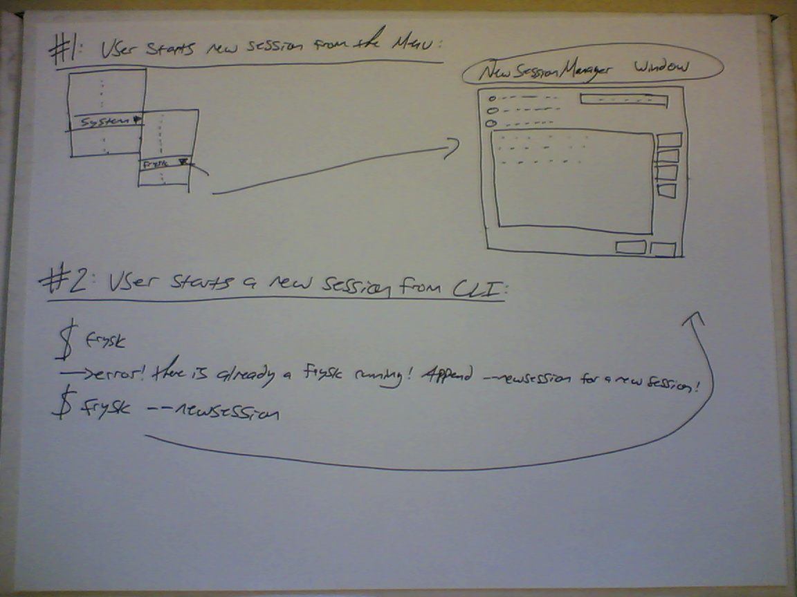
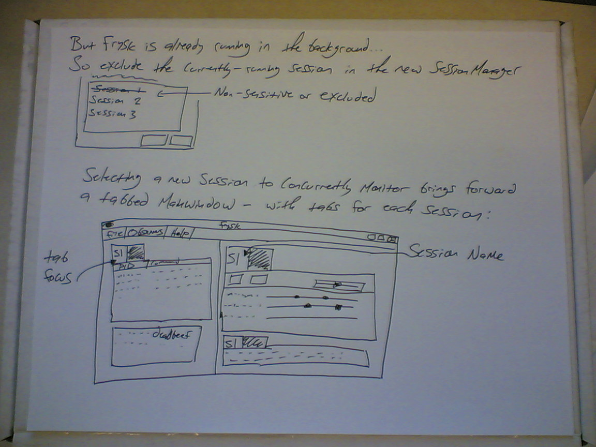
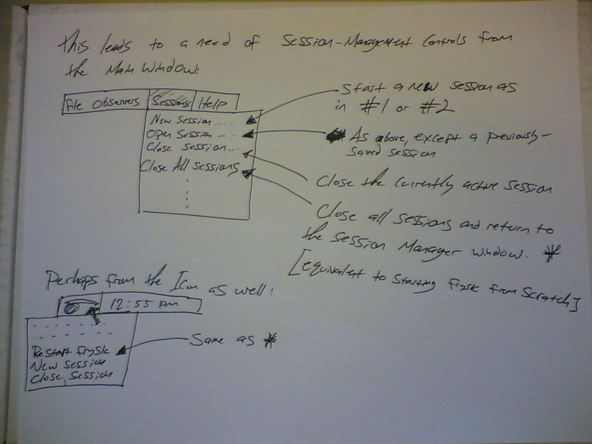

Multiple Sessions
- User would like to start another instance of frysk from menu or from the command line:

- It doesn't seem to make sense to run two frysk's in two separate processes, so why not allow multiple frysk sessions in the same instance? This can be forced through a command-line option, or become default behaviour for selection from the menu. Without the (e.g.) --newsession flag, frysk will refuse to start, and display a message to the user indicating what sort of behaviour will achieve what they are looking for.
- It should be expected that users will want to monitor two separate suites of processes at the same time, necessitating this functionality. Disallowing two separate frysk instances avoids the tricky problems of a) 'what happens when we run frysk on frysk?' b) 'what happens if two Frysks try to monitor the same processes at the same time?'
- So what we'll do is bring up a new session manager window, offering to load a previously created session, or create a new one; and lead to a main window with a tabbed interface.

- The session running in the current instance will have to be disabled, insensitive, or just completely non-existant.
- Trying to open multiple session managers at the same time should be disabled.
- Once the new session has been selected, the main window which is already running will be brought to the foreground. The interface will now be tabbed between sessions; such that the user could choose to examine the timeline and and process list for either session simply by clicking on the appropriate tab.
- Integrating the two sessions into the main window does not, however, imply any sort of convergence between these two sessions; if the user wishes to add the examined processes into the same tab/session, they must do so via the session manager.
- Once frysk is running, the user can access various
windows (or applications from the menu):

- Now that we are running multiple sessions at once through a single window, we'll need controls to edit and manipulate these sessions. Perhaps the user would like to add a new session, close a session, or simply re-start frysk from its inital state without having to quit frysk and execute it again.
- These controls could be placed in the main window toolbar itself, or perhaps through the taskbar icon.
|